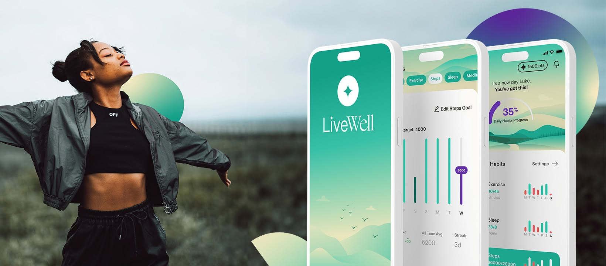
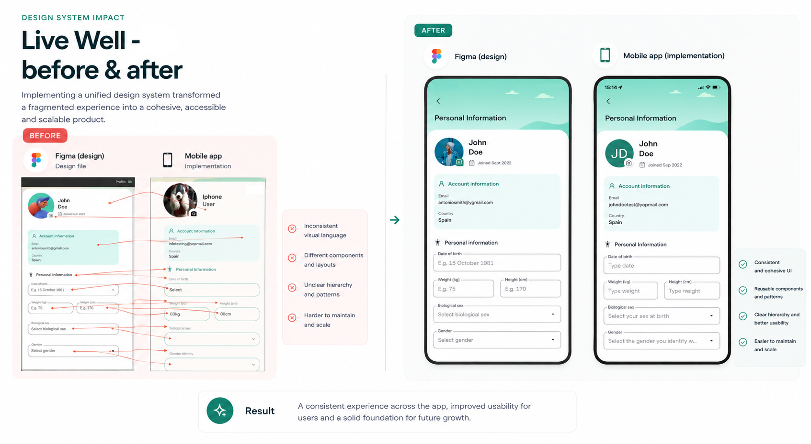

Case study 01
LiveWell by Zurich
Building a Design System from the ground up while contributing to a large health and wellbeing product.

Creating a shared foundation
I built and evolved the LiveWell Design System from the ground up, working closely with design and product teams to establish a consistent visual and technical foundation. The work combined system thinking with hands-on product development, so the Design System had to work in real product flows rather than as an isolated component library.
From foundations to product adoption
Defined color, typography, spacing, sizing, radius, icons and dark mode as reusable foundations.
Built reusable Flutter components and tokens with well-structured APIs, clear conventions and maintainability in mind.
Incorporated accessibility into components and design standards instead of treating it as a later layer.
Worked with product teams to replace legacy components and gradually move the app towards the new system.
Contributed directly to features while solving UX issues, technical debt and cross-squad implementation challenges.
Design System
Built to work in the real product.
Foundations, reusable components and patterns created a shared language between design and engineering, while supporting accessibility, theming and cross-platform consistency.

Product development
Design System work alongside real product development.
Alongside the Design System, I worked directly on product features and user flows, including health and activity tracking and social sharing. Working on both the system and the product helped ensure that reusable components were shaped by real implementation needs.
I worked extensively with collecting and presenting health data from Apple Health, Google Fit and connected devices, turning complex datasets into intuitive and meaningful user experiences.
Outcome
A more consistent, accessible and scalable product experience.
The Design System made it easier for teams to build and maintain new features while moving the product toward higher reuse and consistency.
- Increased reuse reduced development time by around 30%.
- Closer alignment between Figma and implementation reduced repetitive design cleanup and improved designer satisfaction.
- Shared foundations created a more consistent and professional product experience.
- Replacing hundreds of custom UI elements with reusable components significantly reduced duplication and codebase size.
Product delivery
Built and improved health and wellbeing features, including activity-focused experiences and real user flows.
UX quality
Fixed visual and interaction inconsistencies and helped bring the implemented product closer to the intended Figma experience.
Technical quality
Replaced legacy UI, reduced duplicated code and improved maintainability while continuing to deliver product features.
Design collaboration
Worked closely with designers so product needs, component behaviour and implementation details informed each other.